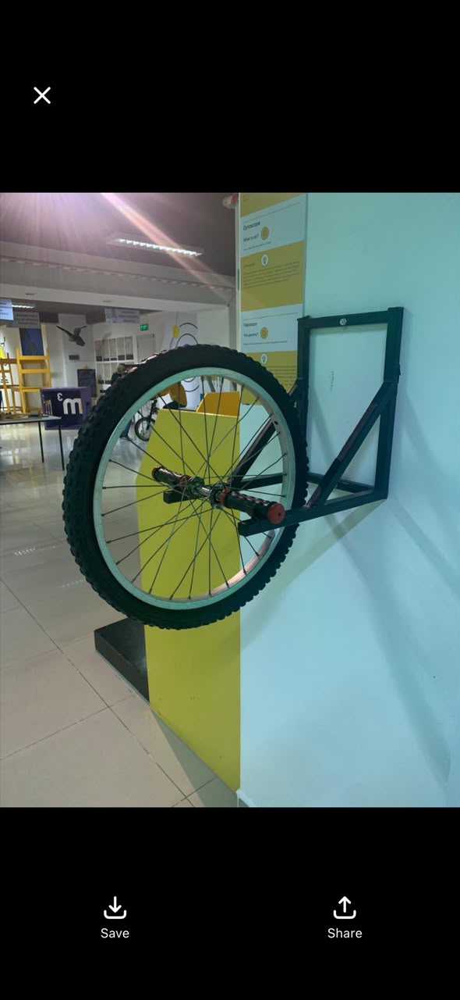

Раскрученное велоколесо упрямо сопротивляется, когда пытаешься наклонить его ось. Этот гироскопический эффект держит в равновесии велосипеды и самолёты.
Пока колесо не вращается, ось легко наклонить в любую сторону. Раскрученное колесо «защищает» направление своей оси и при попытке наклона уводит её вбок.
Это закон сохранения момента импульса. По такому принципу сохраняют устойчивость велосипеды, гироскопы, самолёты и космические аппараты.
Момент импульса L = I·ω. Без внешних моментов сил он сохраняется — ось «держит» направление.